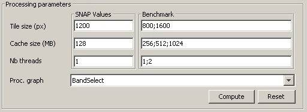
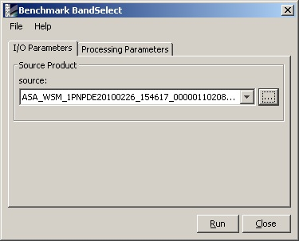
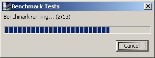
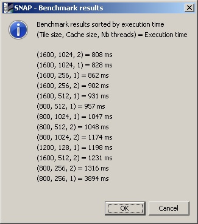

Performance parameters

- VM Parameters
Parameters for the java virtual machine. These parameters are for advanced users only.
They are taken into account after the application restarts. Most effective parameters
for performance are -Xmx (maximum memory) and -Xms (initial memory), they are optimised
when pressing the Compute button.
- Data cache path
SNAP application data cache path path. This path is used by SNAP processors and readers to
store temporary files. Changing this path to a faster drive or RAM Drive can drastically
improve performances for some operations.
Compute
The compute button is calculating optimum memory and cache path parameters for your system
For Virtual Machine parameters, it compute "optimum" memory parameters:
It sets the minumal memory to 2GB if enough memory is available.
It computes the maximal memory using total memory for the system, the memory taken by SNAP
and the memory taken by other processes (OS, other applications, etc.). If the actual free
ram is higher the the "minimum free ram" (fixed to 512Mb), then the maximum memory is configured
so that SNAP can use all the free ram but the "minimum free ram". If the free ram is lower than
the "minimum free ram", the SNAP is configured to take at most the ram it takes plus half of
the free ram
Reset
The reset button reload the initial parameters. After apply or valid your inputs, you can't reset to previous version.
This preferences page provides options to customize processing parameters.
You can manually set processing parameters in SNAP Values or use the benchmark to compute faster processing parameters.
- SNAP Values
There are three processing parameters that may affect processing performance:
- Tile size
Defines the default tile size in pixels.
- Cache size
Defines the default cache size in MB.
- Nb threads
Sets the available number of threads. This value must not exceed your hardware number of cores.
- Benchmark
To help you to define faster processing parameters, you can launch benchmarks.
Follow these steps:
- Select potential values
You need to define a list of potential processing parameters for each values (tile size, cache size and nb threads).
Each list must have at least one value, otherwise each values must be separated by a semi-colon (;).

- Select a processing
Select in the Proc. graph combobox the processing that will be used by the benchmark.
- Set processing parameters
Press the button Compute to launch the processing dialog, sets processing parameters and click Run.

- Results
The benchmark will compute the processing with all given parameters.

It will display all results in a dialog windows and save the faster parameters in SNAP Values.

-
Reset
The reset button reload the initial parameters. After apply or valid your inputs, you can't reset to previous version.